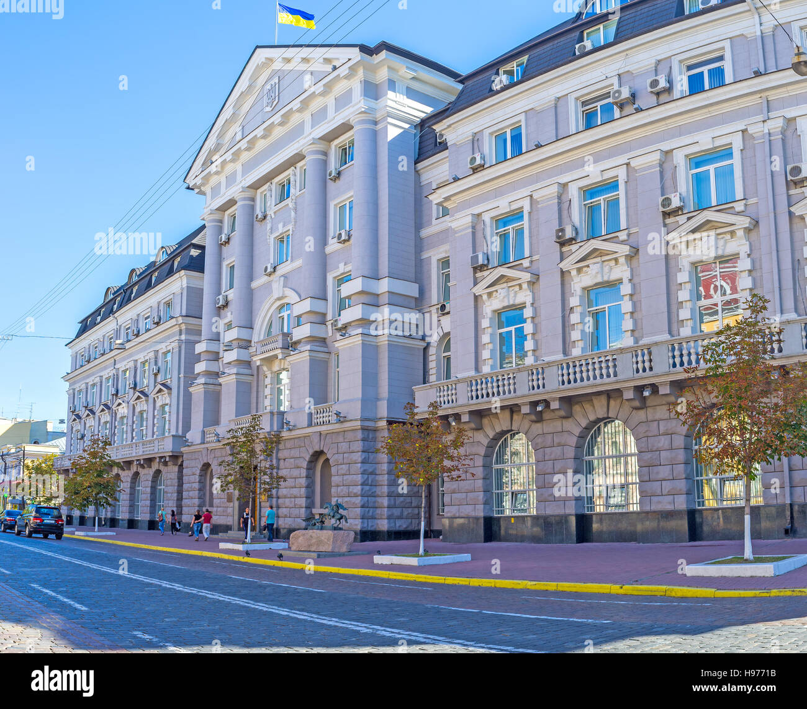
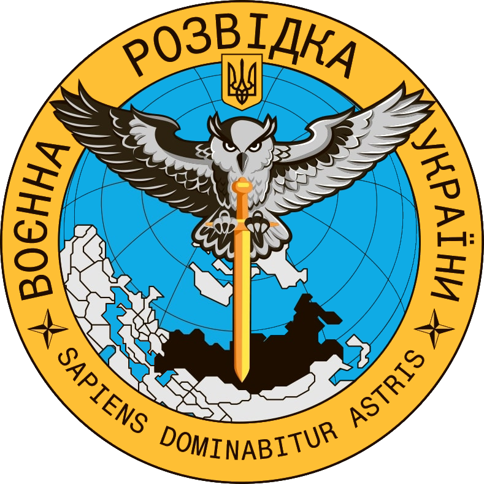

Secret Services of Ukraine

Fig.1. Ukraine: SBU HQ in Kyiv. SBU is the main internal security agency in Ukraine
 Fig.2. Ukraine: Military Intelligence campus
Fig.2. Ukraine: Military Intelligence campus

Fig.3. Ukraine: Military Intelligence Emblem.
Ukrainian military intelligence chose the owl as its symbol
in deliberate contrast to the bat
used by Russian military intelligence--
the owl is a natural predator of bats.